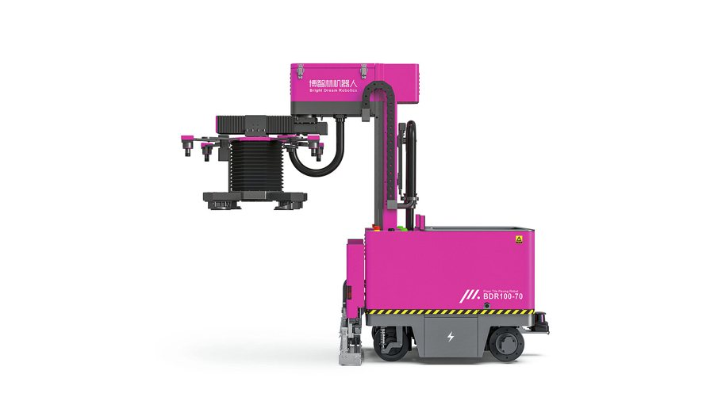
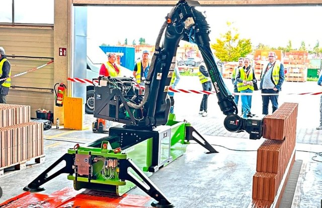
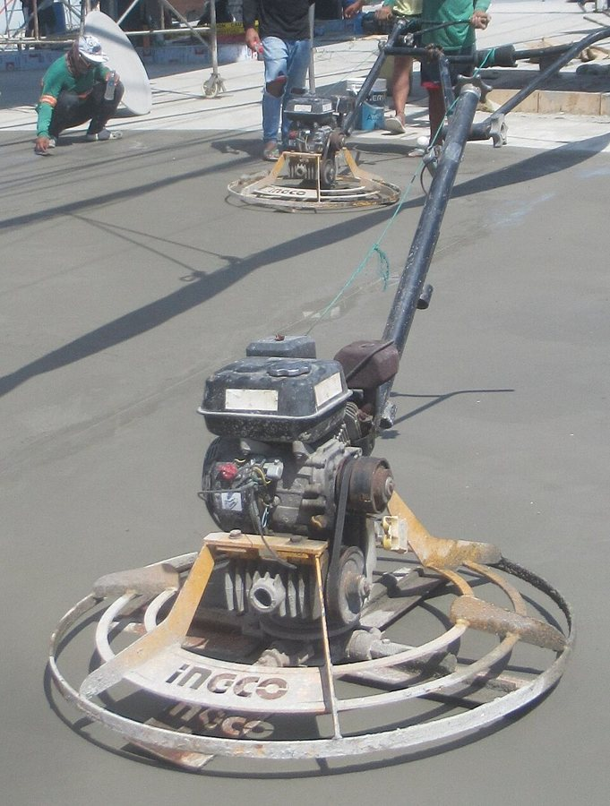
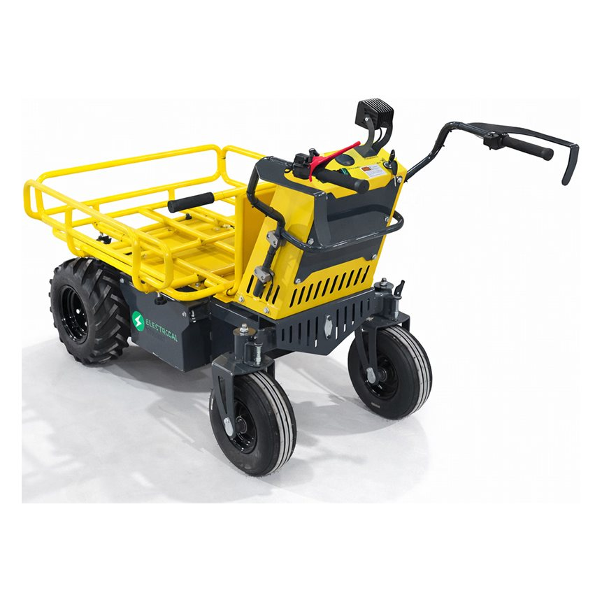

图片仅供参考，展示产品类型。
建筑机器人
天花钻孔机器人 （BIM驱动, 带吸尘）
按BIM数据在天花和墙面自动钻锚栓孔，并配有集成吸尘。
天花钻孔机器人按BIM数据精确地在天花和墙面钻出膨胀螺栓与锚栓孔，并带集成吸尘——这正是班组最吃力的仰头作业。专业用户要求通过全站仪实现毫米级定位、配备M级吸尘并遵守TRGS 559（石英粉尘）规定，且钻孔须满足ETA锚栓的安装要求。必须具备机械指令CE合规、符合EN ISO 13849-1的安全控制系统以及德语说明书。
技术参数
| 钻孔直径 | 典型 6–20 mm |
|---|---|
| 钻孔深度 | 典型最大 100 mm（锚栓安装） |
| 定位精度 | 典型 ± 3 mm（全站仪） |
| 作业高度 | 典型最高 3–4 m |
| 吸尘 | 内置，粉尘等级 M |
| 数据导入 | BIM / IFC / DXF |
| 供电 | 电池，典型 4–8 h；充电器 230 V / 50 Hz |
| 适用基材 | 混凝土 ≥ C20/25（典型） |
| 海关编码（HS） | 84795000 |
欧盟标准与法规
2006/42/EG / (EU) 2023/1230机械指令（至2027年1月19日）／机械法规（自2027年1月20日起）EN ISO 13849-1机械安全——控制系统安全相关部件EN 62841-1电动工具——安全——通用要求（钻孔单元）EN 60335-2-69吸尘器——M级粉尘（吸尘）TRGS 559矿物粉尘（可吸入石英粉尘）ETAG 001 / EAD 330232混凝土用金属锚栓——钻孔及安装要求DGUV Vorschrift 38建筑施工（事故预防）UN 38.3 / IEC 62619锂离子电池——运输测试及工业电池安全
搭配产品

本类别其他产品

自主式地砖铺贴机器人 （大规格）在平整毛坯地面上以薄层法自主铺贴大规格地砖，减轻铺砖工搬运重型砖材的负担。

墙砖铺贴机器人 （内墙, 薄层法）在已处理好的内墙上以薄层胶粘法自动铺贴墙砖，减轻瓷砖工在墙面作业中的体力负担。

砌砖机器人 （墙体砌筑）按砌筑组砌方式自动码放砖块并涂布砂浆，适用于建筑大面积墙体砌筑，重复精度高。

内墙/顶棚喷涂机器人 （腻子＋乳胶漆）在最高3.2米作业高度内自动为内墙和顶棚喷涂腻子与乳胶漆。

墙面/顶棚打磨机器人 （腻子面）在3.3–6米作业高度内自动打磨已刮腻子的墙面和顶棚，并集成吸尘。

放线/划线机器人 （全站仪或RTK导航）将CAD/BIM图纸按比例自动标记到地面，标出墙线、轴线和安装点位。

混凝土抹平与找平机器人 （激光标高控制）在激光标高控制下对新浇筑的找平层和混凝土进行找平、抹光，替代人工刮平和抹压。

无气喷涂喷嘴套装，可翻转式 （6 种规格, 如 211–523），含过滤器套装六个可翻转的碳化钨无气喷嘴，适配常见喷嘴座，另含过滤器，用于墙面和天花板涂装。

迷你棱镜系统配棱镜杆套装 （适用于全站仪, 含连接件、水准泡和收纳袋）；360° 版本须询价配 25.4 毫米棱镜、圆水准泡和棱镜杆的迷你棱镜系统，用于全站仪放样和布局作业。

擦窗机器人 （家用, 吸附式）用于窗户和玻璃的吸附式湿/干擦窗机器人。

手持热成像仪 （512x384, 建筑检测）用于检测热桥、渗漏和潮湿的手持热像仪。

工地电动运输车 （翻斗）用于碎石、沙和建材的电池驱动运输车。

无绳钢筋绑扎机自动用绑丝连接钢筋交叉点的无绳工具。
腰部外骨骼 （工业助力服）减轻下背部负担的穿戴式助力装置。

自动调平360°绿光激光水平仪用于对齐瓷砖、墙面和天花的绿光多线激光。